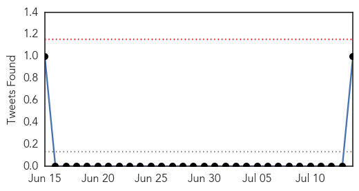
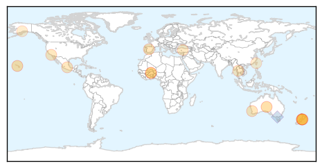
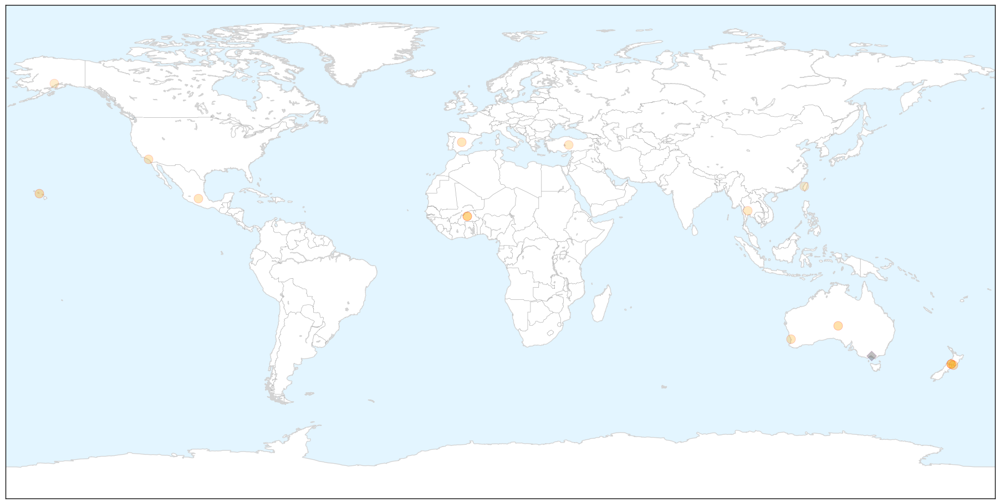
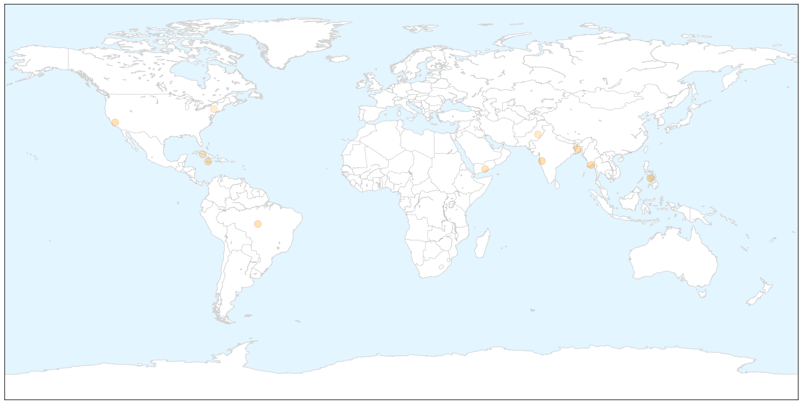

Influenza
30-Day Web Trend
1 alerts, 0 warnings

30-Day Twitter Trend
0 alerts, 0 warnings

Article Locations

X

Article Confidences

Top Articles:
- 0.999
- Vaccine programme extended as influenza just gets warmed up
- 0.991
- An extra month to get free influenza vaccines
- 0.987
- Flu stats jab at seasonal risk
- 0.983
- DOH receives over $100K worth of flu vaccine for Flu Season
- 0.968
- An extra month to get free influenza vaccines
- 0.882
- Older Folks Most Likely to Land in Hospital With CAP
- 0.845
- Sale Of Live Birds Banned By Agric Ministry
- 0.798
- Community-Acquired Pneumonia Requiring Hospitalization among U.S. Adults — NEJM
- 0.796
- Did the Spanish Flu pandemic really start in Spain?
- 0.751
- July 13, 2015 Archives
- 0.751
- July 13, 2015 Archives
- 0.750
- Sale of live birds banned by Agric Ministry
- 0.693
- Thailand rolls out campaign for better environmental health
- 0.680
- Science and a hunch combined to combat bird flu
- 0.578
- Diverse avian flu strains hit UK, Taiwan, South Africa
- 0.571
- Bird flu epidemic proves factory-farmed chickens have come home to roost
Top Tweets:
- 0.759
- RT: Feeling sick? You're not alone. Miserable & slightly above-trend flu season unfolding in Oz. influenza health http://t.…
Dengue Fever
30-Day Web Trend
6 alerts, 4 warnings

30-Day Twitter Trend
2 alerts, 0 warnings

Article Locations

X

Article Confidences

Top Articles:
- 0.992
- Proactive state checks rise of dengue, malaria
- 0.972
- Dengue kills 60 in Myanmar
- 0.966
- Dengue Fever Outbreak In Am. Samoa Declared Epidemic
- 0.946
- HPA sending samples abroad to fight dengue
- 0.925
- Health Minister urges continued vigilance against ZikV
- 0.906
- Health Minister urges continued vigilance against ZikV
- 0.896
- How To Tell If A Bug Bite Needs Medical Attention
- 0.892
- Dengue cases rise in several provinces
- 0.805
- Yemen: UN agencies deliver life-saving medicines and domestic supplies amid ongoing fighting
- 0.741
- My View - We can win the war against dengue
- 0.682
- Anti-dengue drive to continue on Eid
- 0.680
- Dengue, malaria prevention programmes on hold in Gurgaon : Mail Today, News
- 0.574
- unravelling the relationship
Top Tweets:
-
No tweets found for Jul 14, 2015